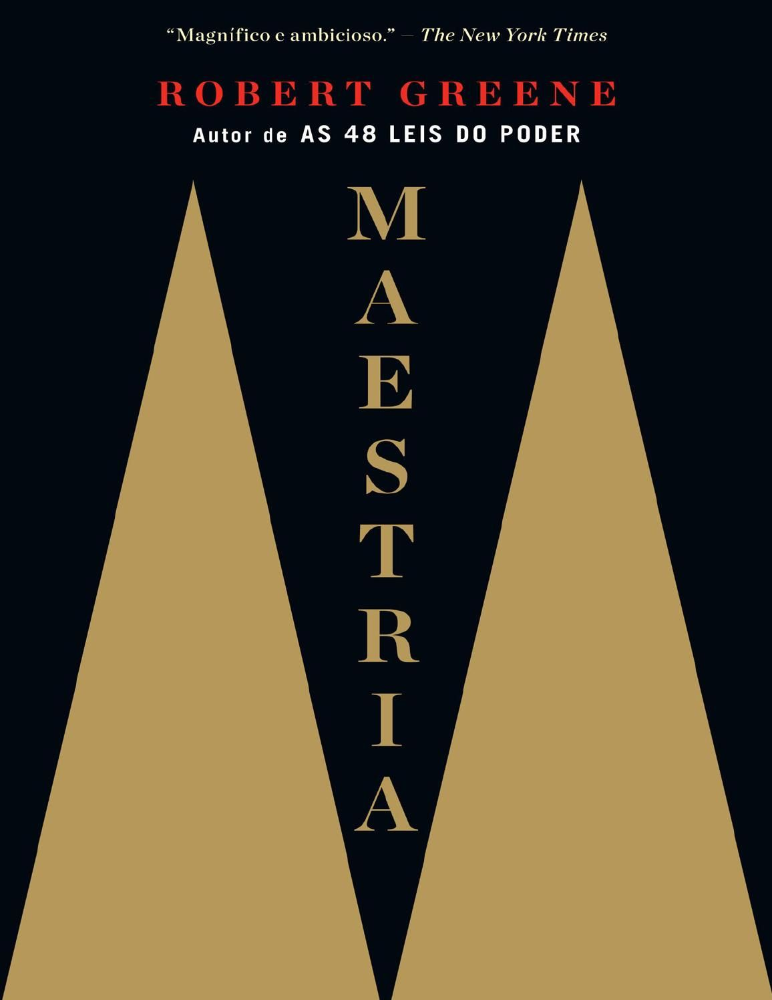

Aparentemente, la práctica de leer libros crea un compromiso cognitivo que mejora muchas cosas, incluido el vocabulario, las habilidades de pensamiento y la concentración.
Ensayo sobre la ceguera
Iré viendo menos cada vez, y aunque no pierda la vista me volveré más ciega cada día porque no tendré quien me vea.
El Arte de la Guerra
El arte de la guerra es un libro sobre tácticas y estrategias militares.
El Principito
He aquí mi secreto, que no puede ser más simple: solo con el corazón se puede ver bien; lo esencial es invisible a los ojos.

Maestría
El éxito no se debe al accidente. No es el resultado de circunstancias ni de suerte. El éxito viene de la motivación.
El coronel no tiene quien le escriba
Cuando se va a vender una cosa hay que poner la misma cara con que se va a comprar.
El Poder del Ahora
“Simplemente, sé y disfruta siendo. Si estás presente no tienes ninguna necesidad de esperar.
48 leyes del poder
Los poderosos varían sus ritmos y pautas, cambian de curso, se adaptan a las circunstancias y aprenden a improvisar.
1984
Quien controla el pasado controla el futuro. Quien controla el presente controla el pasado.